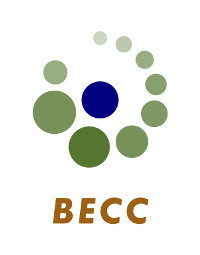

Bayes@Lund 2014 is over, big thanks to everybody that attended. We would also like to thank all the presenters for interesting presentations and BECC for sponsoring the event. A summary of the conference, including pictures, has been written by Ullrika Sahlin and can be found here:
The purpose of this half day conference is to bring together researchers at Lund University working with or interested in Bayesian methods. The focus will be on how Bayesian methods are used in research at Lund universitiy, what advantages Bayesian methods have over classical alternatives, and how the use and teaching of Bayesian methods at Lund University can be encouraged.
The final discussion will be on the slow adoption of Bayesian methods at Lund University. Topics of discussion will be: Why are Bayesian methods not well represented in courses at Lund University? How to deal with aversions to the application of Bayesian methods? How to strengthen the role of Bayesian methods at Lund University?
The full program, including abstracts, is available here: Bayes@Lund 2014 Program
The conference is free to attend but in order to know how much coffee to arrange and if you want to attend the lunch (however at your own cost) we ask you to register in advance here:
Call for Abstracts
We ask for oral presentations about why or how you use Bayesian methods in your research. We seek a mixture of presentations from different faculties and applications. Send in the title of your talk with an abstract (not more than 100 words) to ullrika.sahlin [at] cec.lu.se .
Important Dates
Final date for abstract submission: 23 Mars
Notification to presenters: 25 Mars
Final date for registration: 7 April
The conference: 10 April
Location
Röda Rummet, the Ecology building, Sölvegatan 37 .
For more info, contact
Rasmus Bååth, Lund University Cognitive Science, Department of Philosophy: rasmus.baath [at] lucs.lu.se
Ullrika Sahlin, Lund University Centre of Environmental and Climate Research: ullrika.sahlin [at] cec.lu.se
If you want to get notified of other events at Lund University that relates to Bayesian methods consider subscribing to the Bayes@Lund mailing list at http://www.lucs.lu.se/bayes/
Program
The full program, including abstracts, is available here: Bayes@Lund 2014 Program
13.30 Welcome and introduction
Session 1
13.35 An introduction to Bayesian and hierarchical modelling – Johan Lindström, Mathematical Statistics
13.55 An example of a Bayesian model in BUGS and R – Yf Jiang, Biology
14.05 A generalized approach to modeling and estimating indirect effects in ecology – Yann Clough, Centre of Environmental and Climate Research
14.25 Resting time for migrating birds, and x-ray time variability of galaxies: using Baysian Cramér-Rao bounds – Dragi Anevski, Mathematical Statistics
14.45 Fika break
Session 2
15.15 Bayesian First Aid: Replacing null hypothesis tests by Bayesian estimation. – Rasmus Bååth, Cognitive Science
15.35 Bayesian approach, non-observed variables, and collecting long term data – Krzysztof Podgorski, Statistics
15.55 Reasons to be Bayesian – Ullrika Sahlin, Centre of Environmental and Climate Research
16.15 Incorporating uncertainty when evaluating subsidy effects on farmland bird biodiversity – a Bayesian wannabe analysis – Martin Stjernman, Biology
16.35 General discussion moderated by Ullrika and Rasmus. The final discussion will be on the slow adoption of Bayesian methods at Lund University. Topics of discussion will be: Why are Bayesian methods not well represented in courses at Lund University? How to deal with aversions to the application of Bayesian methods? How to strengthen the role of Bayesian methods at Lund University?
17.00 End of the day
The post-conference discussion will be held at Bishops Arms (S:t Petri Kyrkogata 7).
Acknowledgement
Financial support from the interdisciplinary research program Biodiversity and Ecosystem services in a Changing Climate (BECC) a Lund and Göteborg Universities is greatly appreciated.
